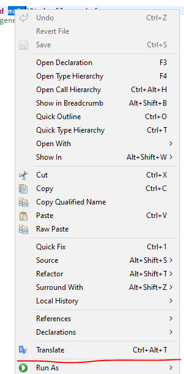
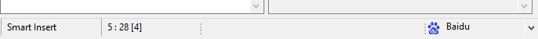

Welcome to the documentation for the Eclipse Translation plugin. This tool enables seamless text translation directly within the Eclipse IDE.
Select any text in an editor, then either:
The translation result will be shown in a popup window.
You can also use the dedicated Translation View:
You can quickly switch translation platforms from the right side of the Eclipse status bar. This selection is synchronized with the preferences. Any change made here will be reflected in the Preferences settings and vice versa.
If you have some thoughts about OpenExplorer, be it a bug report a feature request or whatever, use issues section of the project's GitHub page. If the plug-in does not work properly in your environment or if you have an idea for a nice feature that would be suitable for this plug-in, just go ahead and tell me.